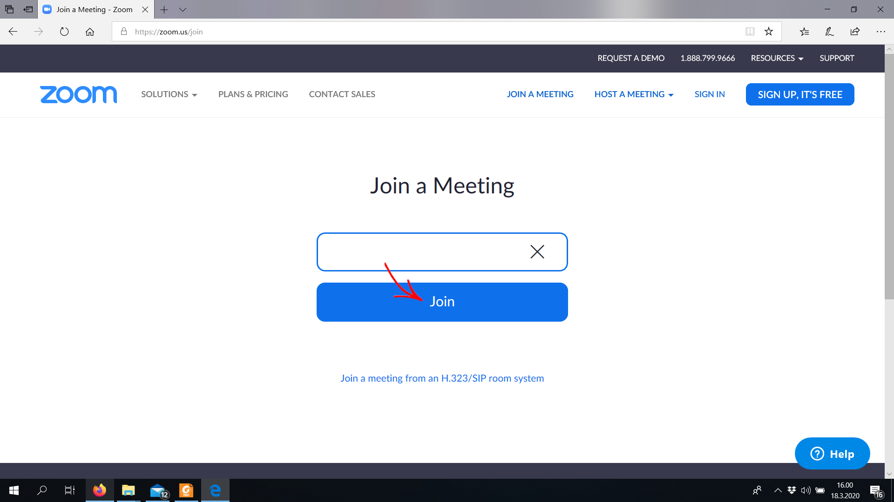
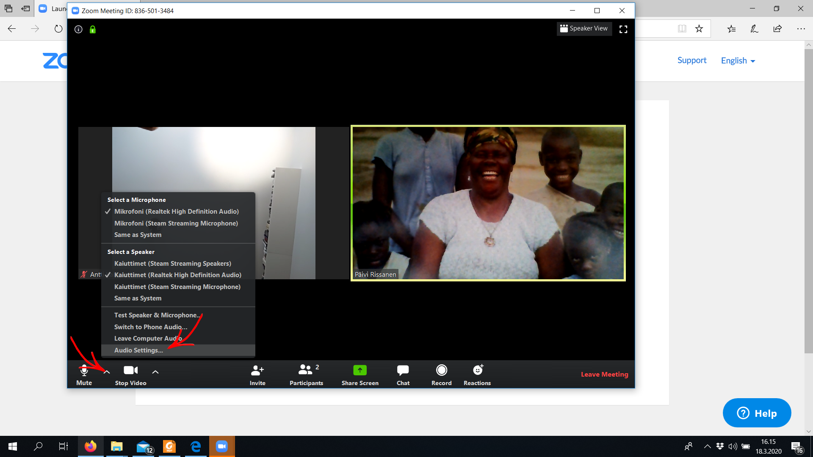

Zoom-etäpuhelun ohje esim. soitonoppilaalle
1. Avaa Edge-selaimella osoite https://zoom.us/ ja napsauta
2. Syötä opettajan antama puhelun numerokoodi ja napsauta Join
3. Napsauta Suorita

4. Zoom-sovellus latautuu

5. Syötä puhelussa näytettävä nimesi ja napsauta Join

6. Napsauta Join with Video

7. Napsauta Join with Computer Audio
8. Napsauta nuolta mikrofonikuvakkeen vieressä ja sitten
9. Napsauta üéß Audio ja sitten Advanced